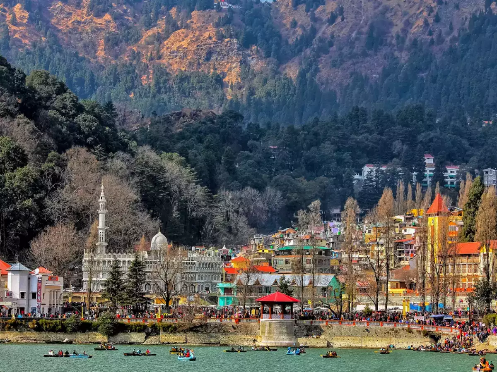
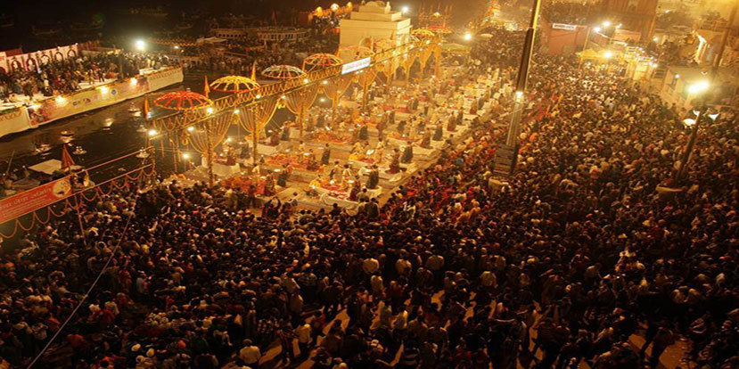
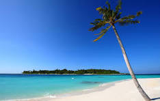

Discovering Nainital: Uttarakhand's Gem of Lakes and Mountains
Summary:Nestled in the Kumaon foothills of the Himalayas, Nainital beckons with its
serene lakes, lush greenery, and breathtaking mountain vistas. Join me on a journey through this
picturesque hill station in Uttarakhand.

As the crisp mountain air embraced us upon arrival in Nainital, it was clear this journey would be
nothing short of magical. The town, set around the shimmering Naini Lake, immediately captured our
hearts with its old-world charm and natural beauty.
Our first stop was Naina Devi Temple, perched atop the northern shore of the lake. The temple's
tranquil ambiance, coupled with panoramic views of the surrounding hills, made it a perfect
introduction to the spiritual and scenic wonders of Nainital.
Venturing further, we explored Mall Road, the bustling heart of Nainital. Lined with quaint shops
offering everything from handmade candles to local delicacies, Mall Road exuded a vibrant energy
that contrasted beautifully with the town's peaceful surroundings.
The highlight of our trip was undoubtedly the boat ride on Naini Lake. Drifting lazily across its
crystal-clear waters, surrounded by mist-kissed mountains and mirrored reflections of the sky above,
felt like a moment frozen in time. It's no wonder Nainital is often referred to as the "Lake
District of India."
Varanasi is a city of contrasts – where the serenity of meditation meets the fervor of celebrations.
The evening aarti (ritual) on the Dashashwamedh Ghat is a spectacle that captures the essence of
this mystical city. As priests perform intricate rituals with synchronized movements, the river
reflects a myriad of floating diyas, creating an ethereal ambiance that is both humbling and
awe-inspiring.
As the sun rises over the ghats, the city comes alive in a symphony of colors and sounds. The
morning rituals, where devotees offer prayers and light diyas (lamps) to the river, paint a surreal
picture against the backdrop of ancient temples and palaces. The air is thick with the fragrance of
incense, mingling with the chants of hymns that echo through the alleys.
One cannot miss the vibrant chaos of the bustling markets, where silk sarees shimmer in every hue
imaginable, and street vendors peddle fragrant spices and local delicacies. Amidst this bustling
energy, time seems to stand still as you sip on a steaming cup of chai, observing life unfold in its
most raw and authentic form.
Yet, amidst its ancient grandeur, Varanasi embraces modernity with open arms. From cozy cafes
offering breathtaking views of the river to vibrant art galleries showcasing contemporary
interpretations of age-old traditions, the city seamlessly blends the old with the new.
For those seeking adventure, Nainital offers ample opportunities for trekking and nature walks. From the
gentle slopes of Snow View Point to the more challenging trails leading to Tiffin Top, each path
promises breathtaking vistas and a chance to reconnect with nature.
Varanasi: Where Time Stands Still and Spirit Soars
Welcome to Varanasi, the spiritual heart of India. Join me as we unravel the ancient lanes, witness
mesmerizing rituals along the Ganges, and delve into the city's rich cultural tapestry.

Varanasi is a city of contrasts – where the serenity of meditation meets the fervor of
celebrations. The evening aarti (ritual) on the Dashashwamedh Ghat is a spectacle that captures
the essence of this mystical city. As priests perform intricate rituals with synchronized
movements, the river reflects a myriad of floating diyas, creating an ethereal ambiance that is
both humbling and awe-inspiring.
As the sun rises over the ghats, the city comes alive in a symphony of colors and sounds. The
morning rituals, where devotees offer prayers and light diyas (lamps) to the river, paint a
surreal picture against the backdrop of ancient temples and palaces. The air is thick with the
fragrance of incense, mingling with the chants of hymns that echo through the alleys.
One cannot miss the vibrant chaos of the bustling markets, where silk sarees shimmer in every
hue imaginable, and street vendors peddle fragrant spices and local delicacies. Amidst this
bustling energy, time seems to stand still as you sip on a steaming cup of chai, observing life
unfold in its most raw and authentic form.
Yet, amidst its ancient grandeur, Varanasi embraces modernity with open arms. From cozy cafes
offering breathtaking views of the river to vibrant art galleries showcasing contemporary
interpretations of age-old traditions, the city seamlessly blends the old with the new.
Varanasi is more than a destination; it is an experience that transcends words. Come, lose yourself in its magic, and discover the soul of India.
Sun, Sand, and Serenity: The Ultimate Goa Experience
Discover the enchanting allure of Goa, India's coastal paradise. From golden beaches and vibrant markets to historical treasures and tantalizing cuisine, join me as we explore the multifaceted charm of this beloved destination.

Goa, a slice of tropical paradise on India's western coast, is a destination that effortlessly blends natural beauty, rich history, and a vibrant cultural scene. With its golden sands, swaying palm trees, and the rhythmic sound of waves crashing on the shore, Goa promises an escape that rejuvenates the soul and excites the senses.
Mornings in Goa are best spent basking in the sun on its pristine beaches. Whether it's the bustling Baga Beach or the tranquil Palolem, each stretch of sand offers its own unique vibe. The water sports enthusiasts can dive into a plethora of activities like parasailing, jet-skiing, and scuba diving, while those seeking relaxation can simply lounge under a beach umbrella, sipping on fresh coconut water.
As the sun climbs higher, the vibrant markets of Goa beckon. The Anjuna Flea Market is a treasure trove of eclectic finds, from handmade jewelry and colorful textiles to quirky souvenirs. The aroma of street food wafts through the air, inviting you to sample local delicacies like spicy Goan sausages, freshly grilled seafood, and the ever-popular Goan fish curry.
Goa's charm isn't confined to its coastline. A visit to the old town of Panaji reveals a tapestry of colonial architecture, narrow winding streets, and picturesque churches. The Basilica of Bom Jesus, a UNESCO World Heritage site, stands as a testament to Goa's rich religious heritage and is a must-visit for history enthusiasts.
Evenings in Goa are a time of transformation. The beach shacks come alive with music and laughter as the sun sets, painting the sky in hues of orange and pink. The nightlife in Goa is legendary, with vibrant clubs and beach parties that continue until the early hours. For a more laid-back experience, the serene ambiance of a beach bonfire, accompanied by the gentle strumming of a guitar, offers the perfect end to a day in paradise.
Goa's allure is irresistible, offering a blend of relaxation and excitement that caters to every kind of traveler. Come, lose yourself in its magic, and create memories that will last a lifetime.
About Me
Hello! I'm Sharad Singh, a passionate blogger with a love for sharing knowledge and experiences.
I have a background in web development and enjoy creating dynamic and engaging content.
My interests range from technology and programming to travel and photography.
This blog is a space where I document my thoughts, ideas, and adventures.
I believe in lifelong learning and strive to explore new skills and hobbies.
When I'm not coding or writing, you can find me exploring the outdoors or curled up with a good book.
I also love connecting with like-minded individuals and building a community of curious minds.
My goal is to inspire and inform my readers through my posts.
Thank you for visiting my blog, and I hope you find my content insightful and enjoyable.
Feel free to reach out through the contact section if you'd like to connect or collaborate!